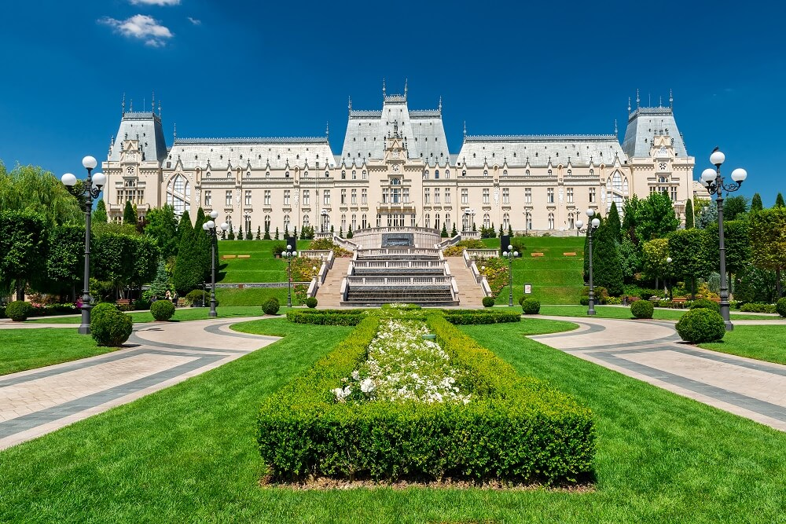
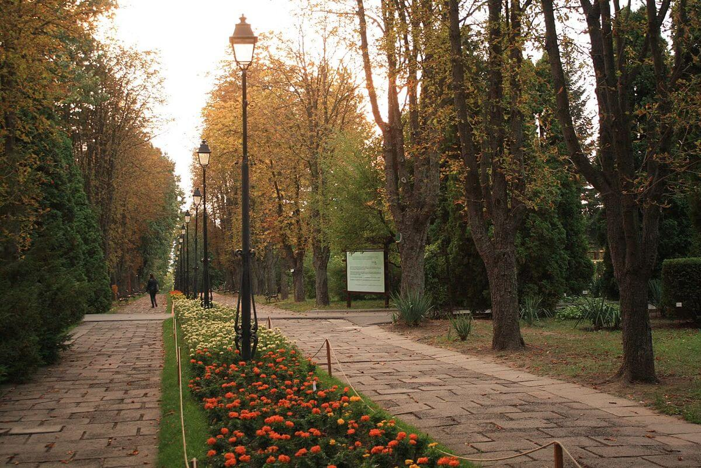
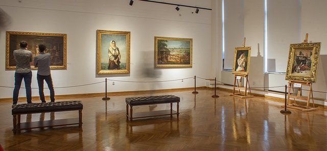

Welcome to Iaşi
By Ionut Andrei Sacaleanu
Exuberant, cultured Iaşi (pronounced ‘yash’) clearly enjoys being the biggest city in Moldavia. Once dubbed the ‘city of the hundred churches’, Iaşi is indeed bursting with centuries of architectural creations. Yet besides the monasteries, theatres and other historic buildings, this eclectic place has botanical parks, big squares and (for better or for worse) both communist-era concrete structures and gleaming modern shopping malls. As with its shopping scene, Iaşi’s innumerable eateries, drinking holes and lively clubs depend on the robust university population. You'll find students from all over the world here – making this little corner of Romania unexpectedly cosmopolitan.
Palace of Culture
Iaşi's premier attraction and symbol of the city is the grandiose Gothic-revival Palace of Culture that dominates the horizon at the southern end of B-dul Ştefan cel Mare şi Sfânt. Though it looks as if it stepped out of a medieval fairy tale, the building is only around 100 years old (built from 1906 to 1925). The palace stands over Prince Alexandru cel Bun's ruined 15th-century princely court. Visitors can tour the palace, climb the tower and explore four major museums.
Palace of Culture
Botanical Gardens
Iaşi's Botanical Gardens are Romania’s first (1856) and largest (100 hectares). They sprawl across Parcul Exposiţiei's western side and offer 21km of shady lanes, 800 rose varieties and orchid gardens, plus greenhouses with tropical flowers and carnivorous plants. Kids will enjoy the lawns and small lake. The gardens are about 3km northwest of the centre, so take a taxi (8 lei) or walk (20 minutes) up on B-dul Carol I.
Botanical Gardens
Art Museum
The art museum occupies much of the Palace of Culture's 1st floor, with some 24 chambers of paintings organised according to category: Romanian modern art, universal art (foreign works), and contemporary art. Highlights of the Romanian section include some 20 works by Nicolae Grigorescu, plus pieces by others, including Moldavian Petre Achiţemie.
